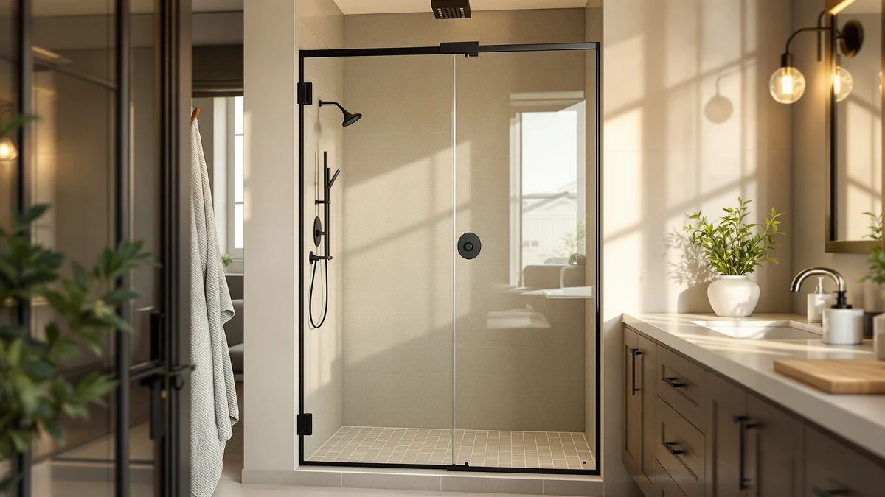

Best Way to Clean Shower Doors with Hard Water Stains: Complete Guide (2026)


Things to Know Before You Buy
- Hard water stains are mineral deposits, not dirt, so soap and standard glass cleaner rarely remove them on their own.
- A vinegar solution left to sit for five to ten minutes breaks down calcium and magnesium buildup before you ever pick up a sponge.
- Abrasive pads and razor blades can scratch tempered glass permanently, and a scratched panel means replacement, not just another cleaning session.
- If stains return within days of cleaning, the cause is your water supply, not a gap in your routine.
- A squeegee pass after every shower prevents most of the mineral buildup a deep clean has to undo.
The best way to clean shower doors with hard water stains is a vinegar-based soak paired with a squeegee routine that keeps mineral deposits from reforming. Calcium and magnesium in tap water leave a hazy film on glass that hardens fast, and a mild acid breaks that bond in minutes instead of the hard scrubbing most people reach for first. Owners dealing with heavy limescale in hard water regions report the difference within a single cleaning session, long before they consider replacing the door.
This guide compares the cleaning methods that actually dissolve hard water buildup against the ones that only polish around it, and explains when a door has crossed the line from dirty to permanently etched. You'll find the categories of products worth keeping under your sink, the mistakes that make stains worse, and a maintenance routine that cuts your cleaning time down to a few minutes a week.
We researched vinegar-based routines, commercial hard water removers, and abrasive options, then cross-checked the results against verified owner reviews from people cleaning both framed and frameless doors. Below is what worked, what to avoid, and a few researched picks for when cleaning alone won't restore glass that's already scratched or clouded.
What You Need to Know
Hard water stains form when water high in calcium and magnesium evaporates off glass and leaves its dissolved minerals behind. Each shower adds another microscopic layer, and within a few weeks those layers harden into the cloudy white film that no amount of dish soap seems to touch. Finding the best way to clean shower doors with hard water stains means treating the problem as a mineral deposit, not ordinary grime.
Standard glass cleaners are built to cut through oil and soap residue, so they leave mineral buildup mostly intact. What actually works is a mild acid: white vinegar, citric acid, or a commercial descaler formulated for hard water. The acid reacts with the calcium carbonate in the stain and dissolves it, which is why a five to ten minute soak matters more than the elbow grease that follows.
The severity of your stains depends on how hard your water is and how long the buildup has had to sit. Light haze from a few weeks of splashing wipes away with a quick vinegar spray. Buildup that's been sitting for months, or stains left over from a previous tenant, often needs a longer soak or a stronger acid concentration to break through. In the worst cases, prolonged mineral exposure etches the glass itself, and at that point no cleaning product brings back a clear finish. Once you know whether you're facing surface buildup or permanent etching, you'll know whether you need a better cleaning routine or a new door.
Types and Categories
Cleaning products for hard water stains fall into three broad categories, and picking the wrong one wastes time or risks the glass. Natural acids, mainly white vinegar and lemon juice, are the cheapest and safest option for regular maintenance. They're mild enough to use weekly without damaging seals or metal hardware, though they need longer contact time on heavier buildup.
Commercial hard water removers use stronger acids, often phosphoric or sulfamic acid, formulated specifically to dissolve limescale faster than vinegar. These work well on doors that have gone months without attention, but you'll need gloves and ventilation, since the concentration that cuts through mineral buildup can also irritate skin and dull certain metal finishes if you leave it on too long.
Abrasive options, including melamine sponges and mineral-specific scouring pads, physically scrub away deposits rather than dissolving them chemically. They're useful for isolated spots that resist a soak, but scrub the same patch of tempered glass too many times and you'll leave fine scratches that trap soap scum faster than the surrounding surface. A fourth category worth mentioning is prevention products: rain-repellent glass coatings that make water bead and slide off before minerals get the chance to settle. None of these replace a cleaning routine entirely, but they stretch the time between deep cleans considerably.
How to Choose
Choosing the best way to clean shower doors with hard water stains depends on three factors: how bad the buildup already is, what your door frame and hardware are made of, and how much time you want to spend weekly versus monthly. Start by matching the cleaning strength to the stain, not the other way around.
For light to moderate haze that's built up over a few weeks, a diluted vinegar solution handles it without any risk to seals or finishes. Spray, wait ten minutes, wipe, and rinse. If that routine leaves spots behind after a couple of attempts, move up to undiluted vinegar or a citric acid soak before you reach for anything harsher.
Doors with chrome, brass, or oil-rubbed bronze hardware need more caution. Undiluted acid left in contact with those finishes for more than a few minutes can dull or discolor them, so wipe hardware dry immediately after rinsing rather than letting the solution sit. Frameless doors with exposed edge seals face a similar risk, since strong acids can dry out rubber gaskets over time and shorten their life.
If you're dealing with heavy, months-old buildup or a door you've inherited from a previous owner, a commercial hard water remover saves time that a vinegar soak alone would take hours to match. Follow the label's dilution and contact time exactly, since these products are formulated to work fast, and oversoaking can damage grout or caulk around the door frame.
Finally, weigh how much of the glass is actually salvageable. Run a fingernail lightly across a stained area. If it catches on a rough, pitted texture rather than sliding over a smooth film, the mineral deposits have etched the glass and no cleaning method restores it. At that point, you're better off comparing replacement doors than buying a stronger cleaner.
Common Mistakes to Avoid
The most common mistake with hard water stains is reaching for a razor blade or a metal scraper on tempered glass. It looks like it should work on stubborn spots, but any blade contact leaves micro-scratches that collect soap scum and mineral deposits faster than the original surface. What started as a cleaning task becomes a permanent one.
Skipping the soak time is another frequent misstep. Spraying an acid solution and scrubbing immediately forces you to fight mineral deposits that would have softened on their own with five or ten more minutes of patience. The wait does more of the work than the scrubbing that follows it.
Mixing cleaning products is a mistake with real safety consequences. Combine vinegar or a commercial descaler with bleach or an ammonia-based cleaner and you'll produce toxic fumes in an enclosed shower stall. Stick to one product at a time and rinse thoroughly before you switch.
Letting the glass air-dry instead of squeegeeing it undoes the entire cleaning session within a day. Water that evaporates on its own leaves fresh mineral traces exactly where the old ones were, so the door looks clean but starts collecting new hard water spots almost immediately. And if you ignore the door track, you only shift the problem: mildew and grit trapped there work their way back onto the glass no matter how well you clean the visible surface.
Care and Maintenance
Preventing hard water stains takes far less effort than removing them. A squeegee pass right after every shower clears the standing water that minerals need to leave a deposit, and it takes under a minute. Owners who make this a habit report going weeks between deep cleans instead of days.
A weekly vinegar spray, even on glass that looks clear, keeps mineral film from building into a visible haze. Treat it as light maintenance rather than a cure, since a few minutes of prevention each week replaces the ten or fifteen minute soak a neglected door eventually demands.
If hard water is affecting fixtures throughout your home, a whole-house water softener addresses the source rather than the symptom. It costs more upfront than a bottle of vinegar, but it cuts down on mineral buildup across your appliances and pipes along with the glass you can see.
Rain-repellent glass treatments applied every few months add another layer of protection by making water bead and run off before minerals settle. They don't replace regular cleaning, but pair one with a squeegee habit and you'll stretch the interval between deep cleans well past what either method manages alone. Small, consistent habits keep the best way to clean shower doors with hard water stains from ever becoming a heavy chore.
Our Top Picks
If a fingernail test confirms your door's glass is etched rather than simply stained, no cleaning routine will bring back a clear finish. These are the doors and hardware fixes we'd look at next, based on what verified buyers report after installing them.

Editor’s Pick
Frameless Shower Door 44-48" W
An 8mm tempered glass door with an explosion-proof film coating and brushed nickel hardware, sized for 44 to 48 inch openings. Reviewers consistently note the coated glass sheds water more evenly than an uncoated panel, which slows how fast new mineral deposits can take hold.
$273.28
Check Price on Amazon
Best Value
44-48" W x 76" H
The same 5/16 inch tempered glass and explosion-proof coating as the pick above, but with matte black stainless hardware for a different finish. Owners report the seals fit tightly enough to cut down on the standing water at the base that turns into fresh hard water stains.
$379.99
Check Price on Amazon
Premium Choice
2-Pack Butecare Frameless Shower Door
A two-pack bottom sweep built for doors that need tighter seals rather than a full glass replacement. Reviewers say it closes the gap that lets water pool at the base, which is often what causes hard water stains to keep returning along the bottom edge no matter how often you clean.
$21.99
Check Price on AmazonFrequently Asked Questions
What is the best way to clean shower doors with hard water stains?
The best way to clean shower doors with hard water stains is a vinegar-based soak: spray full-strength or diluted white vinegar on the glass, let it sit for five to ten minutes, then wipe and rinse. For stains that resist a single pass, extend the soak time before reaching for a stronger commercial descaler.
Does vinegar damage shower door glass or seals?
Diluted white vinegar is safe for tempered glass and most rubber or vinyl seals when it's rinsed off within a few minutes. Leaving it undiluted on chrome or brass hardware for long stretches can dull the finish, so wipe metal parts dry promptly after rinsing.
Can hard water stains be removed once they've etched the glass?
No. Etching happens when mineral deposits sit long enough to pit the glass surface itself, and no cleaning product restores a smooth finish once that's happened. Dragging a fingernail across the spot tells you which you're dealing with: a rough, pitted texture means etching, while a smooth film means the stain will still respond to cleaning.
How often should you clean shower doors to prevent hard water stains?
Squeegee the glass after every shower and run a full vinegar routine once a week. That pace keeps mineral deposits from hardening into the kind of buildup that needs a longer soak or a stronger acid to remove.
Are commercial hard water removers better than vinegar?
Commercial removers use stronger acids and work faster on heavy, months-old buildup, but they require gloves, ventilation, and careful rinsing. For regular maintenance, vinegar costs less, is safer around seals and hardware, and works well enough for most households.
Verdict
The best way to clean shower doors with hard water stains is a vinegar soak followed by a squeegee habit that keeps mineral deposits from reforming in the first place. Treat the stain as a mineral deposit rather than ordinary grime, give it time to soften before you scrub, and skip the razor blades and abrasive pads that scratch tempered glass permanently. Most doors respond to this routine within a single cleaning session, and a weekly touch-up keeps you from facing a full weekend project again.
If a fingernail test shows the glass is pitted rather than filmed, cleaning has reached its limit and the etching has already set in. At that point, a frameless replacement like the IDEALHOUSE door above solves a problem cleaning can't, while a tighter seal at the base often stops new stains from forming at all. Either way, the fix costs less than most people expect once they know which one they actually need.